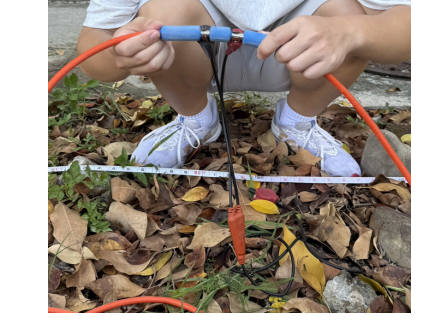
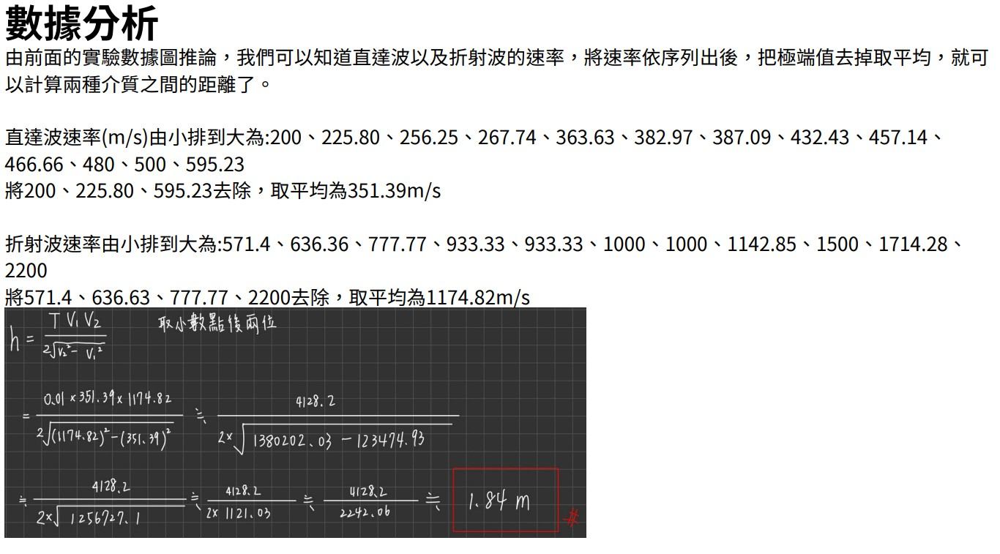

震測實驗與理論推導
作業五
校園震測實驗報告
本次實驗旨在利用折射波原理，測量地層波速並推算地下分層結構。
- 使用 Geophone 接收震波訊號
- 敲擊鐵板產生人工震源
- 分析直達波與折射波走時曲線

儀器架設
施測過程

數據記錄
實驗結論：
根據實驗數據（如作業PDF所示），我們計算出表層土壤與下層介質的波速差異。利用截距時間法（Intercept Time Method），成功推算出介面深度。實驗結果驗證了折射震測法在淺層探勘的有效性。
作業四
折射公式推導
推導臨界折射（Critical Refraction）條件下的司乃耳定律（Snell's Law）應用，以及如何利用走時曲線求取地層厚度與波速。